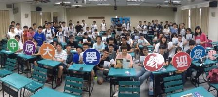
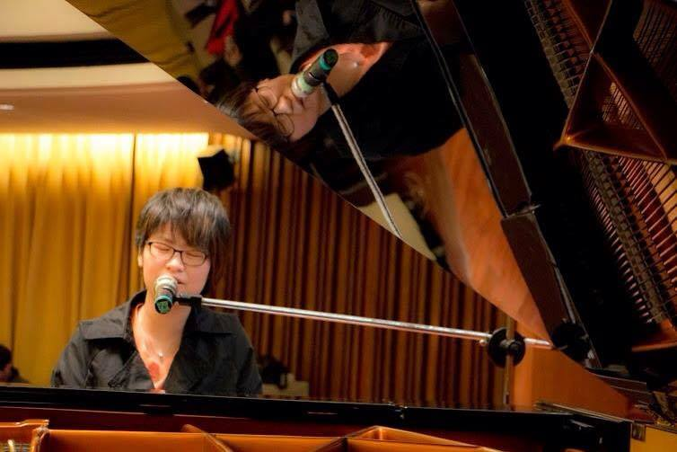
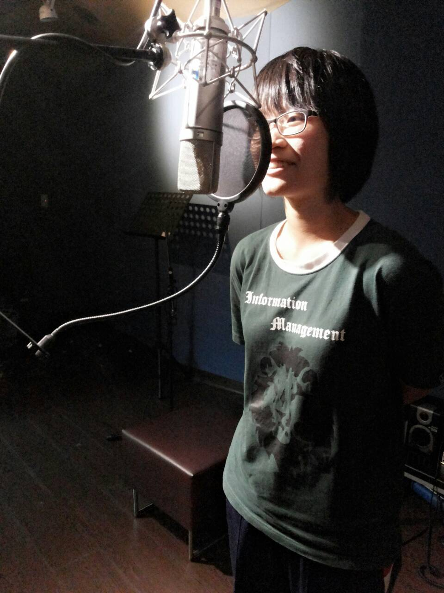
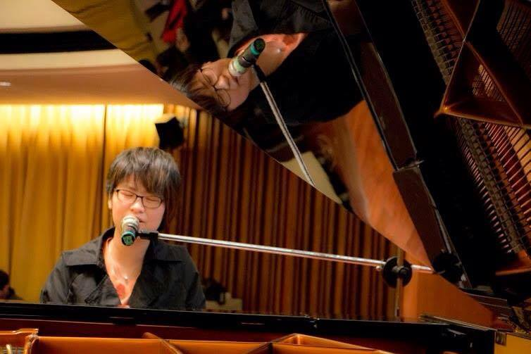
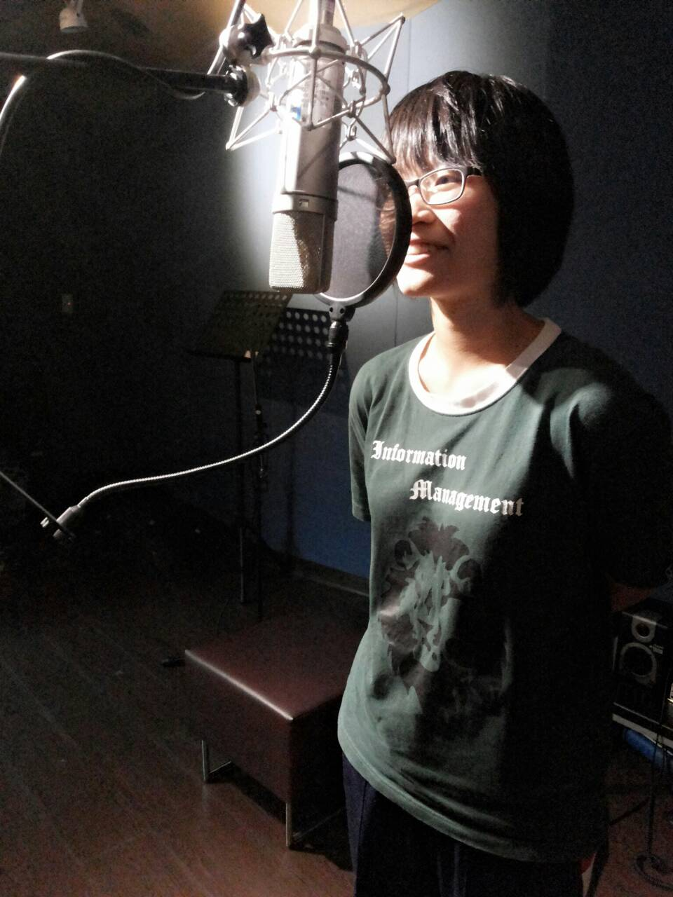
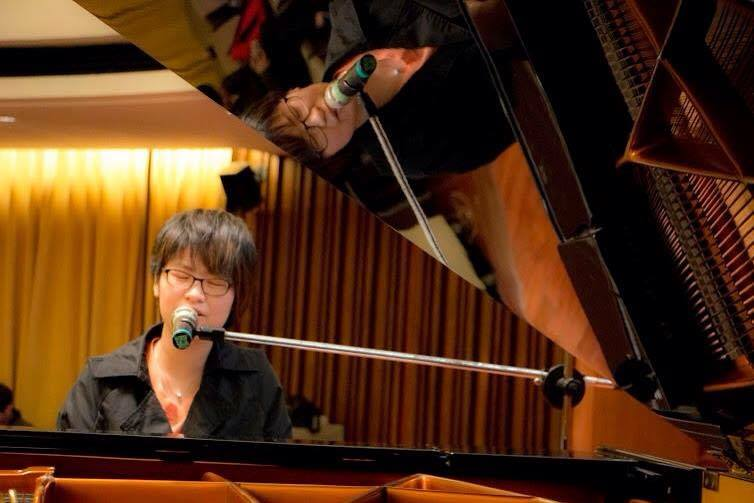
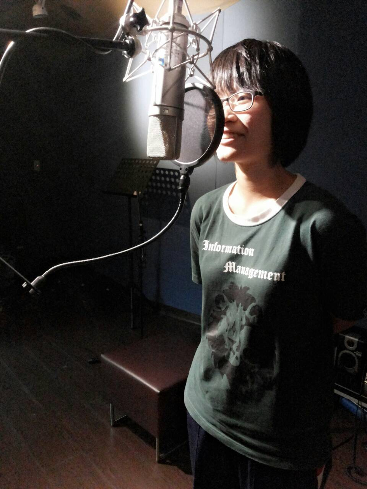

 





【04/18 ・修煉音樂】
#音樂創作#音樂產業#追逐夢想
【資管系・徐佳瑄】
小時候寫作文時,遇上”我的夢想”這一題,你會填上什麼?
大學這四年期間,你做了什麼去尋找心中渴望的夢想道路?
小時候我發現自己對音樂產生了興趣，並開始摸索學習，
大一到大四的路上，有關音樂創作的任何大小事，我都參與其中。
音樂比賽、駐唱、到為電影配樂、廣告配樂、為築夢計畫寫歌、
到受邀至中國廣播電台訪問。
在校內參加吉他社、鋼琴社成發，
站上大大小小的舞台，累積自己的表演經驗，
從這些經驗中，更認識自己確定自己的方向。
音樂是我大學期間的養分，嘗試花時間心力去探索的大領域，
追求自己熱愛的音樂創作，讓夢想不只是夢想，而是我去實踐的道路，
走過的這些歷程，希望讓喜歡音樂的人可以更深入了解音樂產業，
給予追逐夢想的人互相鼓勵分享的力量。
展開